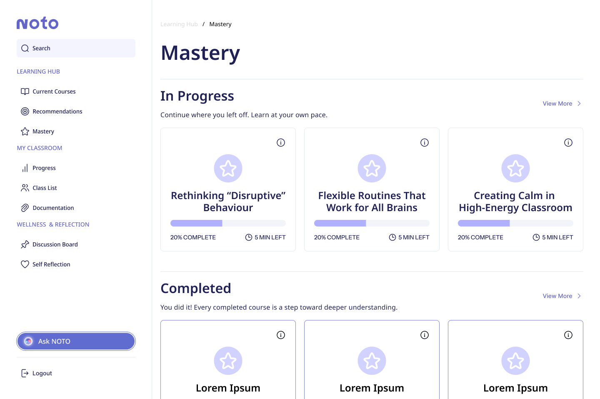
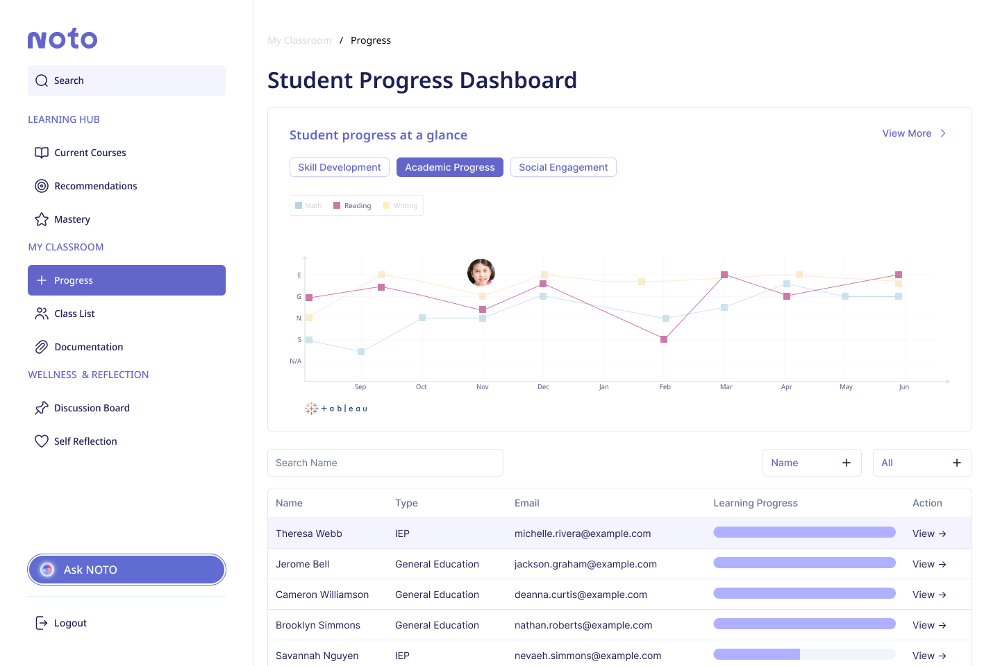
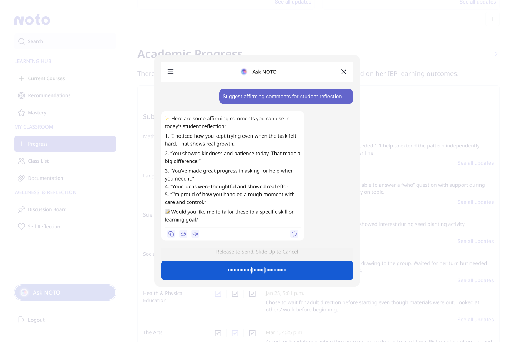
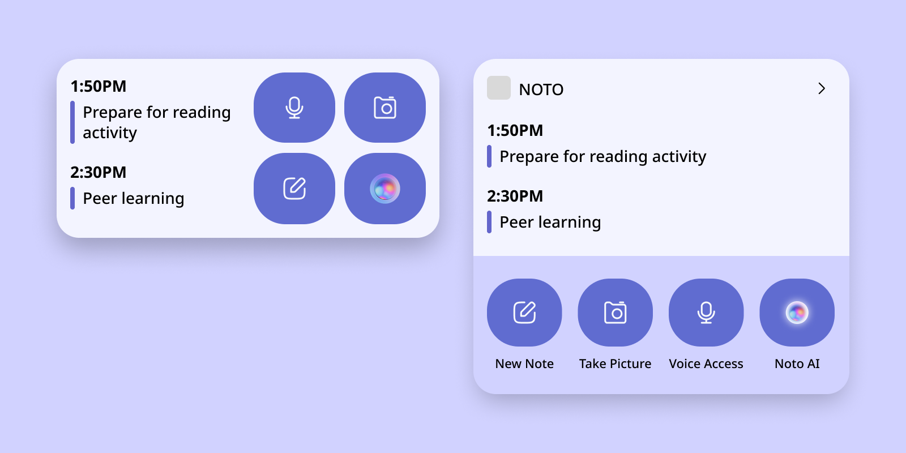
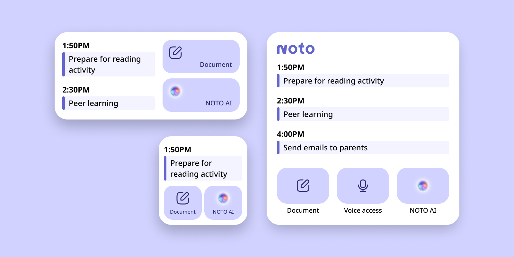
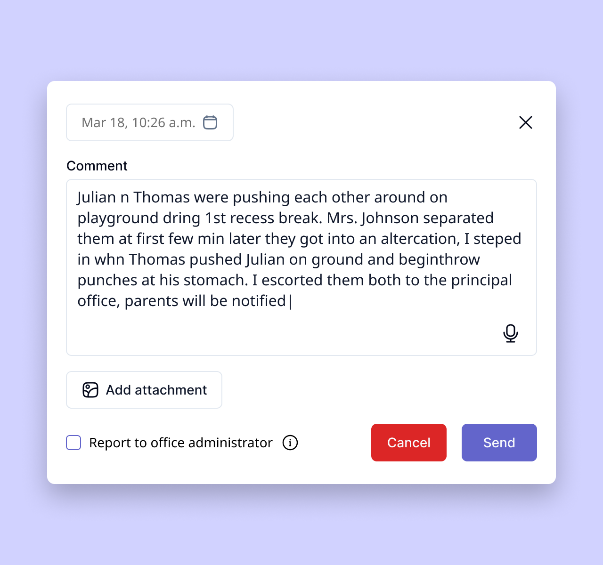

Developing a smart documentation tool for NOTO—a comprehensive support system for early childhood educators
Overview
Fragmented support systems put responsibility on already-overworked teachers to navigate increasing neurodiversity in their classrooms on their own. Designed with insights from educators, NOTO provides teachers with accessible, consistent, and practical support through certified professional development content, classroom management and documentation tools, and AI-powered assistance.
NOTO was developed for Red Thread Innovations' Purposeful Innovation mentorship and came in 2nd place!
Team
Sketchy Solutions includes Marriane Angga, Trang Do (me!), Jade Guerin, Allen Lin, and Hailey Pham.
Role
UX/UI Researcher and Designer
Duration
Jan – Apr 2025 (14 weeks)
Problem space
Early childhood educators are left to manage increasingly neurodiverse classrooms without consistent and practical support.
The rates of burnout and attrition reveal a system built on reactive workarounds, leaving teachers stretched thin and students underserved. While educators face escalating demands, most tools focus on performance metrics and compliance, not empathy, real-time support, or inclusion.
44%
of K-12 teachers report frequent burnout.
(Devlin Peck, 2025)
76%
of teachers report emotional exhaustion.
(Elka Jacobs-Pinson, 2025)
55%
of teachers plan to leave the profession early.
(NCES, 2022)
68%
cite workload as the main factor for stress.
(Heubeck, 2022)
High learning curve and low accessibility cause digital documentation tools to be underutilized and fragment communication.
The variety of digital tools and their complex interfaces lead many educators to default to pen and paper to circumvent long setup time and high learning curve. Paper notes and inefficient digital folders prevent consistent follow-ups and meaningful intervention.
Google Classroom
- Limited behaviour tracking
- Lack real-time support
- Limited intergration with non-Google products and systems
ClassDojo
- Not designed for quick notetaking
- Third-party privacy concerns
- Limited functions for non-paying users
- Lack support for technical issues
Schoology
- High learning curve
- Old-fashioned, nonintuitive interface
- Irrelevant and distracting features
- Prone to bugs and crashes

Meet NOTO
An AI-powered support system designed for the day-to-day reality of ECE teachers, providing intuitive and practical classroom management and intervention.
Designed with early childhood educators, NOTO offers real-time support, inclusive learning strategies, and streamlined administrative tools. Whether tracking student growth, navigating Individual Education Plans, or exploring professional development content, NOTO empowers educators to teach, connect, and care.



NOTO's smart documentation tool accelerates notetaking and reports, allowing educators to reclaim lost time and reduce redundancy.
The documentation feature is designed for in-the-moment brain-dumps. Quick voice recordings and rough notes are distilled into structured outputs for report cards, logs, or communication with caregivers.
Research
Looking at inclusive education and educators' well-being, we saw a disconnect between inclusion efforts and support for educators.
We examined peer-reviewed journals, educational policy frameworks, accessibility guidelines, EdTech trends, and materials related to neurodiversity and inclusive pedagogy. Existing platforms are inadequate in supporting neurodiverse classrooms, leaving teachers feeling unprepared.

Online stories and real-life conversations revealed that educators find existing tools rigid, theoretical, or built for administrators.
Inconsistent Documentation
Documentation is time-consuming, inconsistent, and often inaccessible across platforms, leading to duplicated work and missed context. In our survey, 65% of teachers said their current documentation system failed them and were hard to use or learn.
Impractical Traditional Training
Traditional professional development often feels irrelevant or inaccessible during the workday. In our survey, over 60% of educators said their professional development felt disconnected from their classroom reality and was often completed “just to tick a box.”
Fragmented Management Systems
Teachers struggle to keep track of how each student is doing in fast-paced, ever-changing classrooms. Existing systems are fragmented, slow to update, or require too many steps to be useful in the moment. They need visual tools to quickly spot patterns and where support is most needed without digging through spreadsheets and notes.
Lacking Immediate Support
In moments of stress or crisis, teachers often lack immediate support and practical strategies. They want a tool that could “think with them” during real classroom scenarios.
Findings emphasized the need to balance ease of use for educators—our users, and scalability for administrators—our buyers.
For educators to effectively support students and navigate classroom challenges, they need...
- Tools with low learning curve, high ease of use, and reduced workload
- Seamless integration into the classroom and daily routine
- Intuitive documentation of students' progess with actionable insights
- Accessible and tailored mental health support
To ensure efficiency, scalability, and cost-effectiveness, administrators look for...
- Research-backed with case studies or success stories
- Compliant with district mandates and funding programs
- Integrated with existing district-wide systems
- Minimal training required to ensure smooth adoption
Pain points were transformed into NOTO's core concepts—teachers need real-time, hands-free support, reinforced by practical learning and wellness tools.
Intuitive Documentation
Educators voice-record or jot down notes on-the-go. These raw inputs are distilled into structured outputs for report cards, logs, or communication with caregivers.
Proactive Professional Development
A visual dashboard of bite-sized, relevant, and certification-aligned modules that educators can complete during school hours.
Centralized Class Management
Real-time classroom tool with data visualization that pulls from student profiles and behaviour logs, offering an overview at a glance.
AI Assistant
NOTO AI suggests classroom strategies, helps with documentation, or flags helpful professional development modules in a hands-free format.
Design
To address the need for in-the-moment communication and learning, we outlined a desktop platform for administrative actions and a mobile app providing real-time support.

With the mobile app, we focused on getting the documentation feature right. Including a widget as an entry point would facilitate quick access.

Our first widget prototype tried to cram too many features without a clear hierarchy. We redesigned it to show the most important features with proper labels.
The widget idea was a step in the right direction, but we missed the mark on clarity. Test participants mistook the purpose of icons and didn't know what features were supposed to be shown. We learned from other apps' widgets to refine the layout and improve clarity.

Unclear actions and information

Prioritize core features, more structured
The smart documentation was rebuilt as a brain-dump tool with tablet-first compatibility.
Many teachers have a tablet in class, so developing this feature for tablets first is more appropriate. We decided to incorporate AI into this feature to distill messy inputs into necessary fields, allowing teachers to forego structure when they need to act fast.

Unclear actions

Structured but slower

Quick and simple
As our prototypes were coming together, we adapted the Tailwind component library to fit our visual direction and ensure consistency and efficiency when we built the custom elements we needed.
With ready-made components from Tailwind and our customized design system, I built out the remaining UI elements for the tablet platform and worked with other designers to ensure consistency and accessibility across both mobile and desktop interfaces.

User testing confirmed that teachers can reduce redundancy and create meaningful, consistent documentation with ease.
We sat down with an experienced educator to test the product against real-world expectations. Aside from minor changes to refine information filtering, NOTO's documentation proved to be quick to learn and easy to use.

The next step for NOTO is live testing and observation in classrooms to validate what success looks like for educators.
Adoption
Number of active users per school, adoption rate, and admin support for integration helps us gauge scalability, institutional buy-in, and sustainability.
Engagement
Usage and frequency of core features indicate whether NOTO is intuitive, timely, and integrated into natural classroom flow.
Impact
Time saved on admin tasks and teacher-reported reduction in decision fatigue help us measure how workload and stress are reduced.
Well-being
Voluntary use of wellness tools, teacher-reported benefits, and uptake of peer mentorship ensure emotional tools are helpful and support trust.
Reflection
01
Before this project, I had a working understanding of Figma components, styles, and variables, but not enough experience to leverage them efficiently. I learned from my teammates how to adapt an existing component library and work with variables to design faster and maintain cohesion.
02
Having a good idea of and trust in each other's abilities helps us navigate differing work flows and opinions. We had a good mix of research, design, and presentation strengths, so we could take a step back and focus on our tasks, instead of worrying about every part of the project.